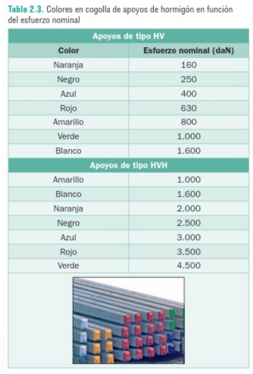
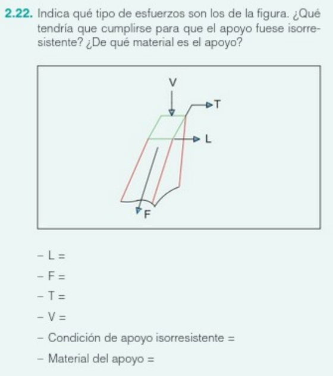

Cuestionarios interactivos
Cuestionarios en línea con preguntas de opción múltiple y respuestas abiertas. Se centrarán en evaluar el dominio de conceptos clave y la capacidad de analizar situaciones específicas.
Cuestionarios en línea con preguntas de opción múltiple y respuestas abiertas. Se centrarán en evaluar el dominio de conceptos clave y la capacidad de analizar situaciones específicas.
Determina para h5 = 0,75m y apoyo HV de cogolla amarilla. ¿Cuál sería su esfuerzo útil y nominal?
Indica la respuesta y los pasos seguidos para determinar dicho esfuerzo en el archivo respuesta.

Indica qué tipos de esfuerzo son los de la figura 2.22. ¿Qué tendría que cumplirse para que el apoyo fuese isorresistente? ¿De qué material es el apoyo?
El archivo respuesta debe ser tipo .DWG
Realiza un trabajo sobre los "Elementos de las redes subterráneas de distribución de AT"
Contenido
▪ Situaciones de uso
▪ Tipos de redes subterráneas
▪ Cableado de uso subterráneo
▪ Canalizaciones
Adjunta el trabajo como archivo realizado con procesador de textos. Haciendo buen uso de los estilos, agregando índice automático y de no más de 5 páginas.
Obra publicada con Licencia Creative Commons Reconocimiento Compartir igual 4.0